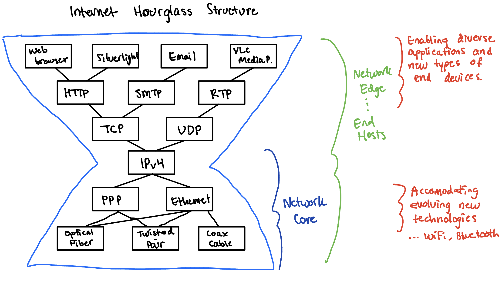
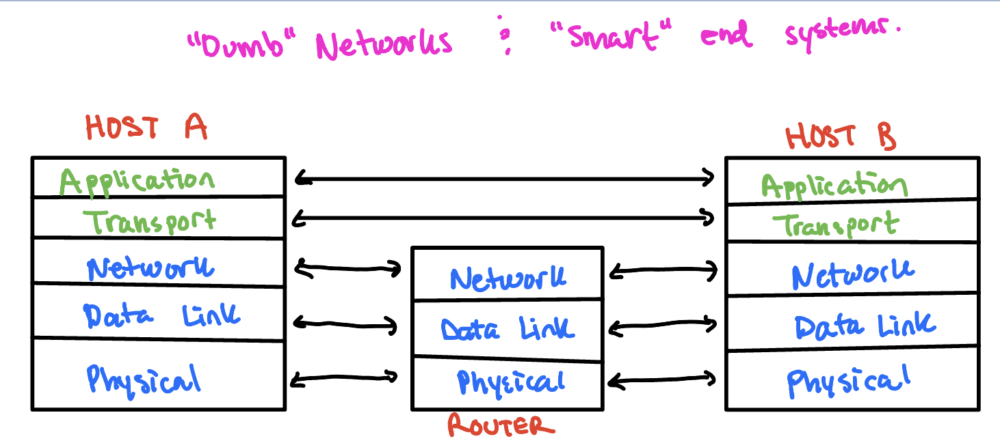
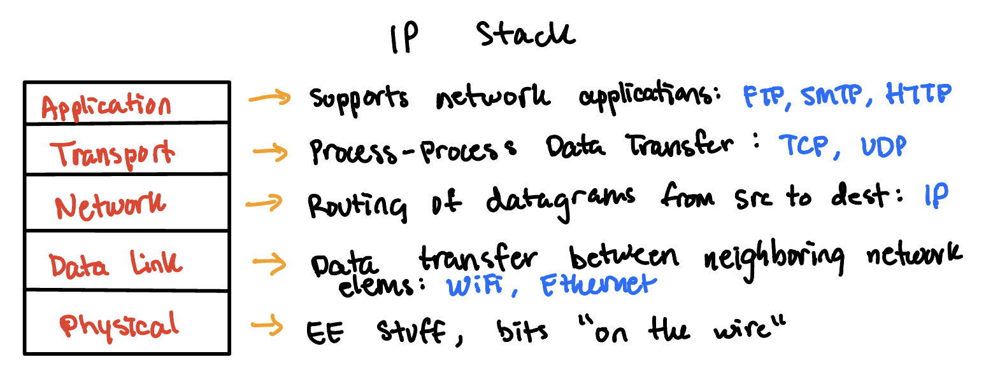
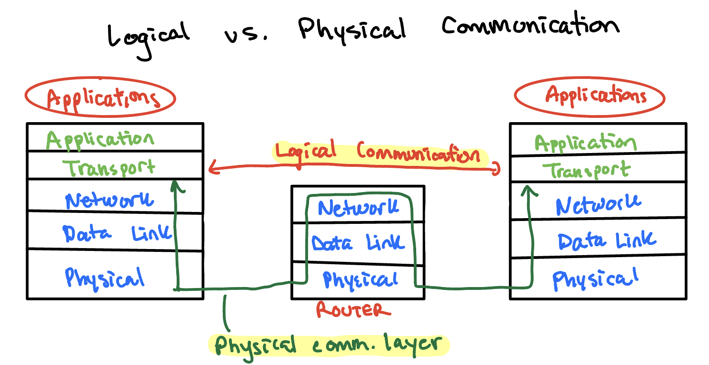
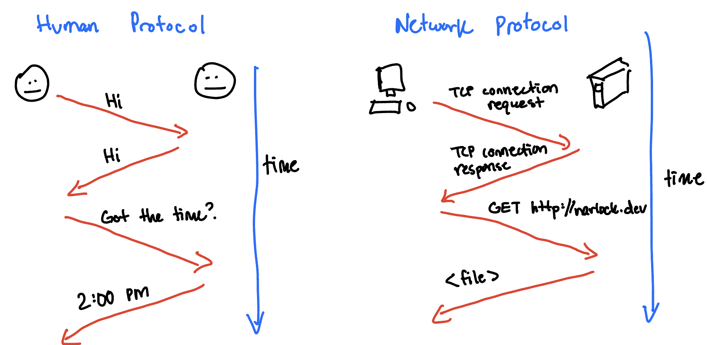
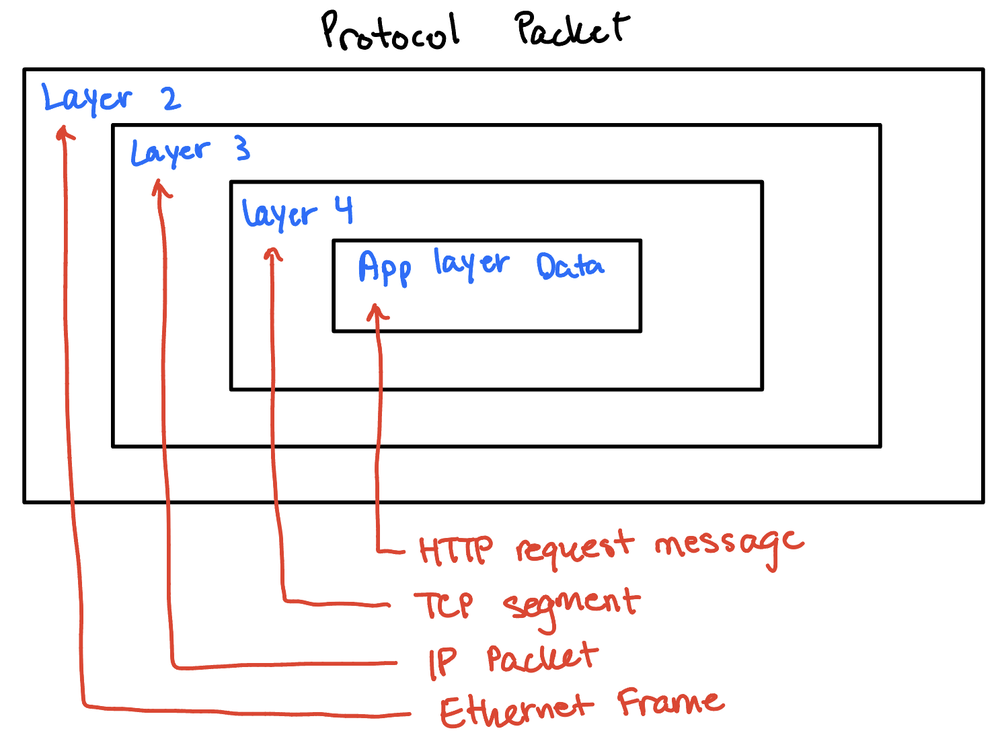
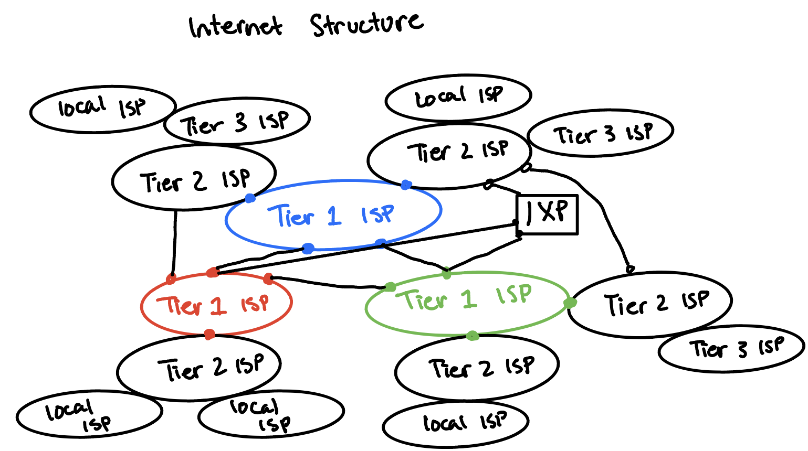

Organization of Computer Networks
9/25/2022, 1293 words, 9 images
Purpose: To explain the organization and architecture behind computer networks and why we use layered architecture. This post will also touch on each of the layers in the IP stack and explain their purpose.
Network Architecture
- Architecture: functional division and functional placement.
- "smart" end systems and "dumb" networks
- "smart" end systems/edges: servers, PCs, mobile devices... Diverse and ever-emerging new applications.
- "dumb" network (core): simple, packet-switched, store-forward, connectionless "datagram" service, with core functions including global addressing, routing & forwarding.


Overview of Network Structure
- "Horizontal View"
- Network Edge: Applications and Hosts
- Network Core: Routers, network of networks.
- Access Networks, Physical Media: Communication links
- "Nuts and Bolts View"
- Millions of connected computing devices (hosts = end systems).
- Running network applications
- Communication links: fiber, copper, radio, satellite. Transmission rate = bandwidth.
- Routers forward packets.
The Network Edge
- End Systems (hosts): run application programs (web, email) at "edge of network"
- Client/Server model: Client host requests, receives service from always-on web server. (web browser/server, email Client/server)
- Peer to Peer model: minimal (or no) use of dedicated servers. (e.g. Skype, BitTorrent)
- Goal for network edge connection services: data transfer between end systems.
- Connection Oriented Service:
- Handshaking (setup) prepare for data transfer ahead of time.
- Hello, hello back human protocol.
- Set up "state" in two communicating hosts
- TCP: transmission control protocol
- Reliable, in-order byte-stream data transfer.
- Loss: acknoledgements and retransmissions.
- Flow control: Sender won't overwhelm receiver
- Congestion-control: senders "slow down sending rate" when network is congested.
- Reliable, in-order byte-stream data transfer.
- Internet's connection-oriented service.
- Connectionless Service:
- UDP: user datagram protocol
- Connectionless
- Unreliable data transfer
- No flow control
- No congestion control
- UDP: user datagram protocol
| TCP | UDP |
|---|---|
| HTTP (Web) | Streaming Media |
| FTP (file transfer) | Teleconferencing |
| SMTP (email) | DNS |
| Flash Videos | Internet telephony |
| DASH stream videos | |
| Telnet (remote login) |
The Network Core
- Mesh of interconnected routers shared by many users.
- On the Internet Edge
- Large number of users (mobile and stationary)
- Large number of "dumb" or "smart" devices and appliances
- Some "always-on", high-speed connection
- Other intermittent connectivity with varying bandwidth
- Diverse applications and services
- Heterogeneous technologies
- Within the Internet "Cloud"
- Network core: Big ISPs (and cellular providers) with large span, as well as medium and smaller ISPs, and the "other end/edge": Big content providers with huge data centers.
- High bandwidth, dense and rich topology
- Enormous computing and storage capacities to support cloud, mobile computing
Organizational Principles of Network Architecture
- Networks are complex!, they have many pieces: hosts, routers, links of various media, hardware/software, applications, protocols...
- "blue prints" (or principles) regarding functional division and functional placement...
- Layers: Each layer implements a service (via its own internal-layer actions, relying on services provided by layer below)
- Why layering?
- We are dealing with a very complex system!
- Explicit structure allows identification, relationship of complex system pieces.
- Modularization eases maintenance, updating of system.
- Change the implementation of layer's service transparent to the rest of the system
- (e.g. change in gate procedure doesn't effect the rest of the system)
- Layering simplifies the architecture of a complex system.
- Advantages: modularization eases maintenance and updating. Hides lower layer complexity/implementation details from higher layers.
- Possible drawbacks:
- possible duplication of functionality between layers
- Error recovery at link layer and transport layer.
- Why layering?
Internet Protocol Stack
-

Application Layer
- Process to process communication. ALL layers exist to support this layer.
- SMTP, FTP, HTTP, ...
Transport Layer
- End to end data delivery through TCP (connection oriented) or UDP (connectionless).
Network Layer
- Global naming and addressing (IPv4, IPv6), routing (build routing tables), forwarding packets hop-by-hop across network. Avoidance of congested/failed links, traffic engineering...
Link Layer
- Data transfer between "neighboring elements" (Ethernet, WiFi, PPP). Framing and error/flow control. Media access control.
Physical Layer
- Electrical engineering stuff... Encoding/decoding information (bits) into physical medcdia, modulating & transmitting raw bits (0/1) over wire.
Layered Architecture
- Layering simplifies the architecture of a complex system.
- Layer N relies on services from layer N-1 to provide service to layer N+1.
- Interfaces define the services offered.
- Service required from a lower layer is independent of its implementation
- Layer N change does not affect other layers
- Information/Complexity hiding
- Similar to Object-oriented methodology

Protocols and Services
- Protocols are used to implement services.
- Peering entities in layer N provide service by communicating with each other using the service provided by N-1.
- Logical vs. physical communication
-

What is a protocol?
- A protocol is a set of rules or procedures for transmitting data between devices. In order for devices to exchange information, there must be a preexistitng agreement as to how the information will be structured and how each side will send and receive it.
- Protocols define format, order of messages sent and received among network entities, and actions taken on message transmission, reciept.
- Human protocols: "What's the time?", "I have a question", Introductions...
- Network protocols:
- TCP/IP, HTTPS, SMTP, DNS, ...
- All communication activity in Internet governed by protocols.

- Protocols define the agreement between peering entities, this means the format and the meaning of messages exchanged.
Protocol Packets
- Protocol data units (PDUs): packets exchanged between peer entities
- Service data units (SDUs): packets handed to a layer by an upper layer
- Data at one layer is encapsulated in packet at a lower layer
- Envelope within envelope: PDU = SDU + (optional) header or trailer

Internet Structure: network of networks
- Roughly heirarchical.
- Tier 1 ISPs, at the center. (Verizon, Sprint, AT&T). National/International coverage.
- They treat each other as equals.
- Providers interconnect (peer) privately.
- Connected to Internet Exchange point (IXP)
- Tier 2 ISPs, smaller (often regional) ISPs.
- Connect to one or more tier 1 ISPs, possibly other tier-2 ISPs.
- Tier 2 ISPs pay Tier 1 ISP for connectivity to rest of Internet.
- Tier 2 ISPs also peer privately with each other, interconnect at IXP.
- Tier 3 and Local ISPs, lasst hope ("access") network (closest to end systems)
- Local and tier 3 ISPs are customers of higher tier ISPs, connecting them to the rest of the internet.
- A packet may go through many networks!

What can go wrong in computer networking?
- Bit-level errors: due to electrical interferences
- Frame-level errors: media access delay or frame collision due to contention/collision/interference
- Packet-level errors: packet delay or loss to network congestion/buffer overflow
- Out of order deliver: packets may take different paths
- Link/Node failures: cable is cut or system crash.
Sources of packet delay
- Nodal processing: check bit errors, determine output link
- Queuing: time waiting at output link for transmission. Depends on congestion level of router.
- Transmission delay: R = link bandwidth (bps), L = packet length (bits). Time to send bits into link = L/R.
- Propagation delay: d = length of physical link, s = propagation speed in medium.
Nodal Delay
d{nodal} = d{proc} + d{queue} + d{trans} + d{prop}- Where
d{proc}is the processing delay, it's typically a few microseconds or less.d{queue}is the queuing delay, depends on congestiond{trans}is the transmission delay, = L/R, significant for low-speed linkd{prop}is the propagation delay, A few microseconds to hundreds of ms.
- Where